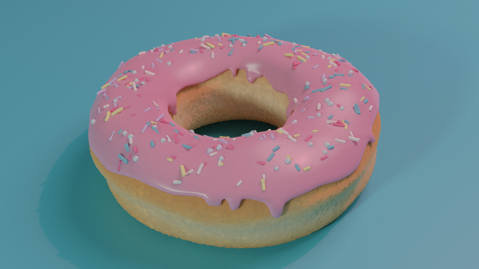

Media Elements
Notice the first two headers above? Are they both <h1> tags? If so, why do you think they are a different size? Is it CSS? Or is there another reason?
<picture>
Single Image
Multiple Image Sizes (Responsive Image)

The New and Preferred. Multiple Sources!

Multiple Sources But Even Better...